var1 = int(input())
var2 = int(input())
var3 = int(input())
var4 = int(input())
var5 = int(input())
var6 = int(input())
:
: Module 3 Part 2: Lists and List Processing
1 Lists
Here you will learn about Python lists and how to perform various operations on them. You will learn how to index, update, and delete list elements, how to perform slices, and how to use some of the most important list functions and methods.
1.1 Why do we need lists?
It may happen that you have to read, store, process, and finally, print dozens, maybe hundreds, perhaps even thousands of numbers. What then? Do you need to create a separate variable for each value? Will you have to spend long hours writing statements like the one below?
If you don’t think that this is a complicated task, then take a piece of paper and write a program that:
reads five numbers;
prints them in order from the smallest to the largest (NB, this kind of processing is called sorting).
You should find that you don’t even have enough paper to complete the task.
So far, you’ve learned how to declare variables that are able to store exactly one given value at a time. Such variables are sometimes called scalars by analogy with mathematics. All the variables you’ve used so far are actually scalars.
Think of how convenient it would be to declare a variable that could store more than one value. For example, a hundred, or a thousand or even ten thousand. It would still be one and the same variable, but very wide and capacious. Sounds appealing? Perhaps, but how would it handle such a container full of different values? How would it choose just the one you need?
What if you could just number them? And then say: give me the value number 2; assign the value number 15; increase the value number 10000.
We’ll show you how to declare such multi-value variables. We’ll do this with the example we just suggested. We’ll write a program that sorts a sequence of numbers. We won’t be particularly ambitious ‒ we’ll assume that there are exactly five numbers.
Let’s create a variable called numbers; it’s assigned with not just one number, but is filled with a list consisting of five values (note: the list starts with an open square bracket and ends with a closed square bracket; the space between the brackets is filled with five numbers separated by commas).
numbers = [10, 5, 7, 2, 1] Let’s say the same thing using adequate terminology: numbers is a list consisting of five values, all of them numbers. We can also say that this statement creates a list of length equal to five (as in there are five elements inside it).
The elements inside a list may have different types. Some of them may be integers, others floats, and yet others may be lists.
Python has adopted a convention stating that the elements in a list are always numbered starting from zero. This means that the item stored at the beginning of the list will have the number zero. Since there are five elements in our list, the last of them is assigned the number four. Don’t forget this.
You’ll soon get used to it, and it’ll become second nature.
Before we go any further in our discussion, we have to state the following: our list is a collection of elements, but each element is a scalar.
1.2 Indexing lists
How do you change the value of a chosen element in the list?
Let’s assign a new value of 111 to the first element in the list. We do it this way:
numbers = [10, 5, 7, 2, 1]
print("Original list contents:", numbers) # Printing original list contents.Original list contents: [10, 5, 7, 2, 1]numbers[0] = 111
print("New list contents: ", numbers) # Current list contents.New list contents: [111, 5, 7, 2, 1]And now we want the value of the fifth element to be copied to the second element ‒ can you guess how to do it?
numbers[1] = numbers[4] # Copying value of the fifth element to the second.
print("New list contents:", numbers) # Printing current list contents. New list contents: [111, 1, 7, 2, 1]The value inside the brackets which selects one element of the list is called an index, while the operation of selecting an element from the list is known as indexing.
We’re going to use the print() function to print the list content each time we make the changes. This will help us follow each step more carefully and see what’s going on after a particular list modification.
Note: all the indices used so far are literals. Their values are fixed at runtime, but any expression can be the index, too. This opens up lots of possibilities.
1.3 Accessing list content
Each of the list’s elements may be accessed separately. For example, it can be printed:
print(numbers[0]) # Accessing the list's first element.111Assuming that all of the previous operations have been completed successfully, the snippet will send 111 to the console.
print("List length:", len(numbers)) # Printing the list's length.List length: 5As you can see in the editor, the list may also be printed as a whole - just like here:
print(numbers) # Printing the whole list.[111, 1, 7, 2, 1]As you’ve probably noticed before, Python decorates the output in a way that suggests that all the presented values form a list.
The len() function
The length of a list may vary during execution. New elements may be added to the list, while others may be removed from it. This means that the list is a very dynamic entity.
If you want to check the list’s current length, you can use a function named len() (its name comes from length).
The function takes the list’s name as an argument, and returns the number of elements currently stored inside the list (in other words ‒ the list’s length).
1.4 Removing elements from a list
Any of the list’s elements may be removed at any time ‒ this is done with an instruction named del (delete). Note: it’s an instruction, not a function.
You have to point to the element to be removed ‒ it’ll vanish from the list, and the list’s length will be reduced by one.
Look at the snippet below.
del numbers[1]
print(len(numbers))
print(numbers) 4
[111, 7, 2, 1]You can’t access an element which doesn’t exist ‒ you can neither get its value nor assign it a value. Both of these instructions will cause runtime errors now:
print(numbers[4])IndexError: list index out of rangenumbers[4] = 1IndexError: list assignment index out of rangeNote: we’ve removed one of the list’s elements ‒ there are only four elements in the list now. This means that element number four doesn’t exist.
1.5 Negative indices are legal
It may look strange, but negative indices are legal, and can be very useful.
An element with an index equal to -1 is the last one in the list.
numbers = [111, 7, 2, 1]
print(numbers[-1])1Similarly, the element with an index equal to -2 is the one before last in the list.
numbers = [111, 7, 2, 1]
print(numbers[-2])2The last accessible element in our list is numbers[-4] (the first one) ‒ don’t try to go any further!
numbers[-4]111numbers[-5]IndexError: list index out of range1.6 Lab: The basics of lists
Scenario
There once was a hat. The hat contained no rabbit, but a list of five numbers: 1, 2, 3, 4, and 5.
Your task is to:
write a line of code that prompts the user to replace the middle number in the list with an integer number entered by the user (Step 1)
write a line of code that removes the last element from the list (Step 2)
write a line of code that prints the length of the existing list (Step 3).
Ready for this challenge?
hat_list = [1, 2, 3, 4, 5] # This is an existing list of numbers hidden in the hat.
# Step 1: write a line of code that prompts the user
# to replace the middle number with an integer number entered by the user.
# Step 2: write a line of code that removes the last element from the list.
# Step 3: write a line of code that prints the length of the existing list.
print(hat_list)Solution:
hat_list = [1, 2, 3, 4, 5] # This is an existing list of numbers hidden in the hat.
user_integer = 7
hat_list[2] = user_integer
del hat_list[-1]
print("Length of the list:", len(hat_list))
print(hat_list)Length of the list: 4
[1, 2, 7, 4]1.7 Functions vs. methods
A method is a specific kind of function ‒ it behaves like a function and looks like a function, but differs in the way in which it acts, and in its invocation style.
A function doesn’t belong to any data ‒ it gets data, it may create new data and it (generally) produces a result.
A method does all these things, but is also able to change the state of a selected entity.
A method is owned by the data it works for, while a function is owned by the whole code.
This also means that invoking a method requires some specification of the data from which the method is invoked.
It may sound puzzling here, but we’ll deal with it in depth when we delve into object-oriented programming.
In general, a typical function invocation may look like this:
result = function(arg)The function takes an argument, does something, and returns a result.
A typical method invocation usually looks like this:
result = data.method(arg)Note: the name of the method is preceded by the name of the data which owns the method. Next, you add a dot, followed by the method name, and a pair of parenthesis enclosing the arguments.
The method will behave like a function, but can do something more ‒ it can change the internal state of the data from which it has been invoked.
You may ask: why are we talking about methods, not about lists?
This is an essential issue right now, as we’re going to show you how to add new elements to an existing list. This can be done with methods owned by all the lists, not by functions.
1.8 Adding elements to a list: .append() and .insert()
A new element may be glued to the end of the existing list:
list.append(value)Such an operation is performed by a method named .append(). It takes its argument’s value and puts it at the end of the list which owns the method.
The list’s length then increases by one.
The .insert() method is a bit smarter ‒ it can add a new element at any place in the list, not only at the end.
list.insert(location, value)It takes two arguments:
the first shows the required location of the element to be inserted; note: all the existing elements that occupy locations to the right of the new element (including the one at the indicated position) are shifted to the right, in order to make space for the new element;
the second is the element to be inserted.
Look at the code in the editor. See how we use the append() and insert() methods (I stopped adding a dot at the beginning to write more quickly). Pay attention to what happens after using insert(): the former first element is now the second, the second the third, and so on.
numbers = [111, 7, 2, 1]
print(len(numbers))
print(numbers)4
[111, 7, 2, 1]numbers.append(4)
print(len(numbers))
print(numbers)5
[111, 7, 2, 1, 4]numbers.insert(0, 222)
print(len(numbers))
print(numbers)6
[222, 111, 7, 2, 1, 4]Run the following snippet. Print the final list content to the screen and see what happens.
numbers.insert(1, 333)
numbers[222, 333, 111, 7, 2, 1, 4]The snippet above inserts 333 into the list, making it the second element. The former second element becomes the third, the third the fourth, and so on.
You can start a list’s life by making it empty (this is done with an empty pair of square brackets) and then adding new elements to it as needed.
Take a look at the snippet in the editor.
my_list = [] # Creating an empty list.
for i in range(5):
my_list.append(i + 1)
print(my_list)[1, 2, 3, 4, 5]It’ll be a sequence of consecutive integer numbers from 1 (you then add one to all the appended values) to 5.
We’ve modified the snippet a bit:
my_list = [] # Creating an empty list.
for i in range(5):
my_list.insert(0, i + 1)
print(my_list)[5, 4, 3, 2, 1]What happens now? You should get the same sequence, but in reverse order (this is the merit of using the insert() method).
1.9 Making use of lists
The for loop has a special variant that can process lists very effectively ‒ let’s take a look at that.
my_list = [10, 1, 8, 3, 5]
total = 0
for i in range(len(my_list)):
total += my_list[i]
print(total)27Let’s assume that you want to calculate the sum of all the values stored in the my_list list.
You need a variable whose sum will be stored and initially assigned a value of 0 ‒ its name will be total. (Note: we’re not going to name it sum as Python uses the same name for one of its built-in functions: sum(). Using the same name would generally be considered bad practice.) Then you add to it all the elements of the list using the for loop. Take a look at the snippet in the editor.
Let’s comment on this example:
the list is assigned a sequence of five integer values;
the
ivariable takes the values0,1,2,3, and4, and then it indexes the list, selecting the subsequent elements: the first, second, third, fourth and fifth;each of these elements is added together by the
+=operator to thetotalvariable, giving the final result at the end of the loop;note the way in which the
len()function has been employed ‒ it makes the code independent of any possible changes in the list’s contents.
The second aspect of the for loop
But the for loop can do much more. It can hide all the actions connected to the list’s indexing, and deliver all the list’s elements in a handy way.
This modified snippet shows how it works:
my_list = [10, 1, 8, 3, 5]
total = 0
for i in my_list:
total += i
print(total)27What happens here?
the
forinstruction specifies the variable used to browse the list (ihere) followed by theinkeyword and the name of the list being processed (my_listhere)the
ivariable is assigned the values of all the subsequent list’s elements, and the process occurs as many times as there are elements in the list;this means that you use the
ivariable as a copy of the elements’ values, and you don’t need to use indices;the
len()function is not needed here, either.
1.10 Lists in action
Let’s leave lists aside for a short moment and look at one intriguing issue.
Imagine that you need to rearrange the elements of a list, i.e., reverse the order of the elements: the first and the fifth as well as the second and fourth elements will be swapped. The third one will remain untouched.
Question: how can you swap the values of two variables?
Take a look at the snippet:
variable_1 = 1
variable_2 = 2
variable_2 = variable_1
variable_1 = variable_2If you do something like this, you would lose the value previously stored in variable_2. Changing the order of the assignments will not help. You need a third variable that serves as an auxiliary storage.
This is how you can do it:
variable_1 = 1
variable_2 = 2
auxiliary = variable_1
variable_1 = variable_2
variable_2 = auxiliaryPython offers a more convenient way of doing the swap – take a look:
variable_1 = 1
variable_2 = 2
variable_1, variable_2 = variable_2, variable_1
print(variable_1, variable_2)2 1Clear, effective and elegant - isn’t it?
Now you can easily swap the list’s elements to reverse their order:
my_list = [10, 1, 8, 3, 5]
my_list[0], my_list[4] = my_list[4], my_list[0]
my_list[1], my_list[3] = my_list[3], my_list[1]
print(my_list)[5, 3, 8, 1, 10]It looks fine with five elements.
Will it still be acceptable with a list containing 100 elements? No, it won’t.
Can you use the for loop to do the same thing automatically, irrespective of the list’s length? Yes, you can.
This is how we’ve done it:
my_list = [10, 1, 8, 3, 5]
length = len(my_list)
for i in range(length // 2):
my_list[i], my_list[length - i - 1] = my_list[length - i - 1], my_list[i]
print(my_list)[5, 3, 8, 1, 10]Note:
we’ve assigned the
lengthvariable with the current list’s length (this makes our code a bit clearer and shorter)we’ve launched the
forloop to run through its bodylength // 2times (this works well for lists with both even and odd lengths, because when the list contains an odd number of elements, the middle one remains untouched)we’ve swapped the i-th element (from the beginning of the list) with the one with an index equal to
length - i - 1(from the end of the list); in our example, foriequal to0,length - i - 1gives4; foriequal to1, it gives3‒ this is exactly what we needed.
Lists are extremely useful, and you’ll encounter them very often.
1.11 Lab: The basics of lists - the Beatles
Scenario
The Beatles were one of the most popular music groups of the 1960s, and the best-selling band in history. Some people consider them to be the most influential act of the rock era. Indeed, they were included in Time magazine’s compilation of the 20th Century’s 100 most influential people.
The band underwent many line-up changes, culminating in 1962 with the line-up of John Lennon, Paul McCartney, George Harrison, and Richard Starkey (better known as Ringo Starr).
Write a program that reflects these changes and lets you practice with the concept of lists. Your task is to:
step 1: create an empty list named
beatles;step 2: use the
append()method to add the following members of the band to the list:John Lennon,Paul McCartney, andGeorge Harrison;step 3: use the
forloop and theappend()method to prompt the user to add the following members of the band to the list:Stu Sutcliffe, andPete Best;step 4: use the
delinstruction to removeStu SutcliffeandPete Bestfrom the list;step 5: use the
insert()method to addRingo Starrto the beginning of the list.
By the way, are you a Beatles fan? (The Beatles is one of Greg’s favorite bands. But wait…who’s Greg…?)
beatles = []
print("Step 1:", beatles)Step 1: []beatles.append("John Lennon")
beatles.append("Paul McCartney")
beatles.append("George Harrison")
print("Step 2:", beatles)Step 2: ['John Lennon', 'Paul McCartney', 'George Harrison']new_members = ["Stu Sutcliffe", "Pete Best"]
for member in new_members:
beatles.append(member)
print("Step 3:", beatles)Step 3: ['John Lennon', 'Paul McCartney', 'George Harrison', 'Stu Sutcliffe', 'Pete Best']del beatles[4]
del beatles[3]
print("Step 4:", beatles)Step 4: ['John Lennon', 'Paul McCartney', 'George Harrison']beatles.insert(0, "Ringo Starr")
print("Step 5:", beatles)Step 5: ['Ringo Starr', 'John Lennon', 'Paul McCartney', 'George Harrison']# testing list legth
print("The Fab", len(beatles))The Fab 41.12 Section summary
1. The list is a type of data in Python used to store multiple objects. It is an ordered and mutable collection of comma-separated items between square brackets, e.g.:
my_list = [1, None, True, "I am a string", 256, 0]2. Lists can be indexed and updated, e.g.:
my_list = [1, None, True, 'I am a string', 256, 0]
print(my_list[3]) # outputs: I am a string
print(my_list[-1]) # outputs: 0
my_list[1] = '?'
print(my_list) # outputs: [1, '?', True, 'I am a string', 256, 0]
my_list.insert(0, "first")
my_list.append("last")
print(my_list) # outputs: ['first', 1, '?', True, 'I am a string', 256, 0, 'last']I am a string
0
[1, '?', True, 'I am a string', 256, 0]
['first', 1, '?', True, 'I am a string', 256, 0, 'last']3. Lists can be nested, e.g.:
my_list = [1, 'a', ["list", 64, [0, 1], False]]
my_list [1, 'a', ['list', 64, [0, 1], False]]You will learn more about nesting in the section Lists in advanced applications ‒ for the time being, we just want you to be aware that something like this is possible, too.
4. List elements and lists can be deleted, e.g.:
my_list = [1, 2, 3, 4]
del my_list[2]
print(my_list) # outputs: [1, 2, 4]
del my_list # deletes the whole list[1, 2, 4]Again, you will learn more about this in the section Operations on lists ‒ don’t worry. For the time being just try to experiment with the above code and check how changing it affects the output.
5. Lists can be iterated through using the for loop, e.g.:
my_list = ["white", "purple", "blue", "yellow", "green"]
for color in my_list:
print(color)white
purple
blue
yellow
green6. The len() function may be used to check the list’s length, e.g.:
my_list = ["white", "purple", "blue", "yellow", "green"]
print(len(my_list)) # outputs 5
del my_list[2]
print(len(my_list)) # outputs 45
47. A typical function invocation looks as follows: result = function(arg), while a typical method invocation looks like this: result = data.method(arg).
1.13 Section quiz
Question 1: What is the output of the following snippet?
lst = [1, 2, 3, 4, 5]
lst.insert(1, 6)
del lst[0]
lst.append(1)
print(lst)[6, 2, 3, 4, 5, 1]Question 2: What is the output of the following snippet?
lst = [1, 2, 3, 4, 5]
lst_2 = []
add = 0
for number in lst:
add += number
lst_2.append(add)
print(lst_2)[1, 3, 6, 10, 15]Question 3: What is the output of the following snippet?
lst = []
del lst
print(lst)NameError: name 'lst' is not definedQuestion 4: What is the output of the following snippet?
lst = [1, [2, 3], 4]
print(lst[1])
print(len(lst))[2, 3]
32 Sorting simple lists: the bubble sort algorithm
You will learn how to sort simple lists using the Bubble sort algorithm.
2.1 The bubble sort
Now that you can effectively juggle the elements of lists, it’s time to learn how to sort them. Many sorting algorithms have been invented so far, which differ a lot in speed, as well as in complexity. We are going to show you a very simple algorithm, easy to understand, but unfortunately not too efficient, either. It’s used very rarely, and certainly not for large and extensive lists.
Let’s say that a list can be sorted in two ways:
increasing (or more precisely ‒ non-decreasing) ‒ if in every pair of adjacent elements, the former element is not greater than the latter;
decreasing (or more precisely ‒ non-increasing) ‒ if in every pair of adjacent elements, the former element is not less than the latter.
In the following sections, we’ll sort the list in increasing order, so that the numbers will be ordered from the smallest to the largest.
Here’s the list:
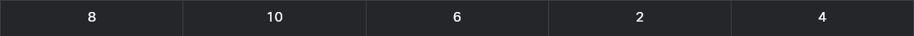
We’ll try to use the following approach: we’ll take the first and the second elements and compare them; if we determine that they’re in the wrong order (i.e., the first is greater than the second), we’ll swap them round; if their order is valid, we’ll do nothing. A glance at our list confirms the latter ‒ the elements 01 and 02 are in the proper order, as in 8 < 10.
Now look at the second and the third elements. They’re in the wrong positions. We have to swap them:
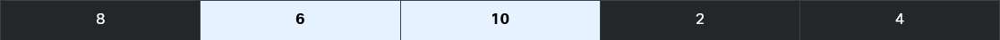
We go further, and look at the third and the fourth elements. Again, this is not what it’s supposed to be like. We have to swap them:
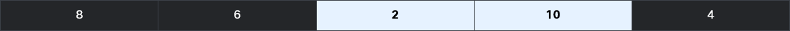
Now we check the fourth and the fifth elements. Yes, they too are in the wrong positions. Another swap occurs:
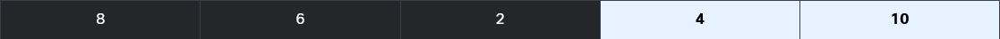
The first pass through the list is already finished. We’re still far from finishing our job, but something curious has happened in the meantime. The largest element, 10, has already gone to the end of the list. Note that this is the desired place for it. All the remaining elements form a picturesque mess, but this one is already in place.
Now, for a moment, try to imagine the list in a slightly different way ‒ namely, like this:
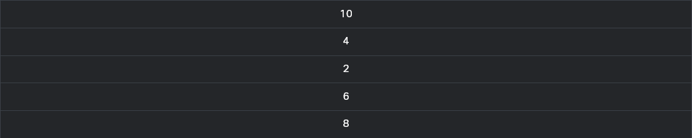
Look ‒ 10 is at the top. We could say that it floated up from the bottom to the surface, just like the bubble in a glass of champagne. The sorting method derives its name from the same observation ‒ it’s called a bubble sort.
Now we start with the second pass through the list. We look at the first and second elements - a swap is necessary:
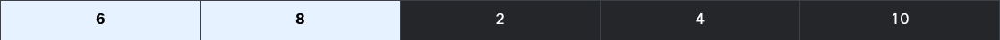
Time for the second and third elements: we have to swap them too:
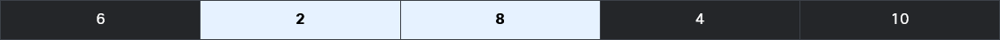
Now the third and fourth elements, and the second pass is finished, as 8 is already in place:
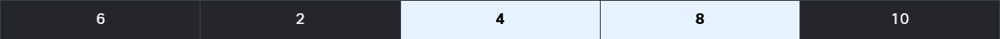
We start the next pass immediately. Watch the first and the second elements carefully - another swap is needed
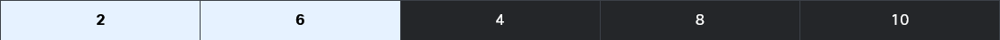
Now 6 needs to go into place. We swap the second and the third elements:
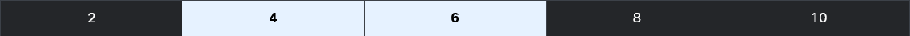
The list is already sorted. We have nothing more to do. This is exactly what we want.
As you can see, the essence of this algorithm is simple: we compare the adjacent elements, and by swapping some of them, we achieve our goal.
Let’s code into Python all the actions performed during a single pass through the list, and then we’ll consider how many passes we actually need in order to perform it. We haven’t explained this so far, and we’ll do that a little later.
2.2 Sorting a list
How many passes do we need to sort the entire list?
We solve this issue in the following way: we introduce another variable; its task is to observe if any swap has been done during the pass or not; if there is no swap, then the list is already sorted, and nothing more has to be done. We create a variable named swapped, and we assign a value of False to it, to indicate that there are no swaps. Otherwise, it will be assigned True.
my_list = [8, 10, 6, 2, 4] # list to sort
for i in range(len(my_list) - 1): # we need (5 - 1) comparisons
# compare adjacent elements:
if my_list[i] > my_list[i + 1]:
# If we end up here, we have to swap the elements:
my_list[i], my_list[i + 1] = my_list[i + 1], my_list[i] You should be able to read and understand this program without any problems:
my_list = [8, 10, 6, 2, 4] # list to sort
swapped = True # It's a little fake, we need it to enter the while loop.
while swapped:
swapped = False # no swaps so far
for i in range(len(my_list) - 1):
if my_list[i] > my_list[i + 1]:
swapped = True # a swap occurred!
my_list[i], my_list[i + 1] = my_list[i + 1], my_list[i]
print(my_list)[2, 4, 6, 8, 10]2.3 The bubble sort – interactive version
In the editor you can see a complete program, enriched by a conversation with the user, and allowing the user to enter and to print elements from the list: The bubble sort ‒ final interactive version.
my_list = []
swapped = True
num = int(input("How many elements do you want to sort: "))
for i in range(num):
val = float(input("Enter a list element: "))
my_list.append(val)
while swapped:
swapped = False
for i in range(len(my_list) - 1):
if my_list[i] > my_list[i + 1]:
swapped = True
my_list[i], my_list[i + 1] = my_list[i + 1], my_list[i]
print("\nSorted:")
print(my_list)Python, however, has its own sorting mechanisms. No one needs to write their own sorts, as there is a sufficient number of ready-to-use tools.
We explained this sorting system to you because it’s important to learn how to process a list’s contents, and to show you how real sorting may work.
If you want Python to sort your list, you can do it like this:
my_list = [8, 10, 6, 2, 4]
my_list.sort()
print(my_list)[2, 4, 6, 8, 10]It is as simple as that.
As you can see, all the lists have a method named sort(), which sorts them as fast as possible. You’ve already learned about some of the list methods before, and you’re going to learn more about others very soon.
2.4 Section summary
1. You can use the sort() method to sort elements of a list, e.g.:
lst = [5, 3, 1, 2, 4]
print(lst)
lst.sort()
print(lst) # outputs: [1, 2, 3, 4, 5][5, 3, 1, 2, 4]
[1, 2, 3, 4, 5]2. There is also a list method called reverse(), which you can use to reverse the list, e.g.:
lst = [5, 3, 1, 2, 4]
print(lst)
lst.reverse()
print(lst) # outputs: [4, 2, 1, 3, 5][5, 3, 1, 2, 4]
[4, 2, 1, 3, 5]2.5 Section quiz
Question 1: What is the output of the following snippet?
lst = ["D", "F", "A", "Z"]
lst.sort()
print(lst)['A', 'D', 'F', 'Z']Question 2: What is the output of the following snippet?
a = 3
b = 1
c = 2
lst = [a, c, b]
lst.sort()
print(lst)[1, 2, 3]Question 3: What is the output of the following snippet?
a = "A"
b = "B"
c = "C"
d = " "
lst = [a, b, c, d]
lst.reverse()
print(lst)[' ', 'C', 'B', 'A']3 Operations on lists
In this section you will learn how to process lists using slices and the inand not in operators. You will also analyze a few simple programs utilizing the concept of lists to learn how to apply them in more challenging projects.
3.1 The inner life of lists
Now we want to show you one important, and very surprising, feature of lists, which strongly distinguishes them from ordinary variables.
We want you to memorize it ‒ it may affect your future programs, and cause severe problems if forgotten or overlooked.
Take a look at the snippet in the editor.
list_1 = [1]
list_2 = list_1
list_1[0] = 2
print(list_2)[2]The program:
creates a one-element list named
list_1;assigns it to a new list named
list_2;changes the only element of
list_1;prints out
list_2.
The surprising part is the fact that the program will output: [2], not [1], which seems to be the obvious solution.
Lists (and many other complex Python entities) are stored in different ways than ordinary (scalar) variables.
You could say that:
the name of an ordinary variable is the name of its content;
the name of a list is the name of a memory location where the list is stored.
Read these two lines once more ‒ the difference is essential for understanding what we are going to talk about next.
The assignment: list_2 = list_1 copies the name of the array, not its contents. In effect, the two names (list_1 and list_2) identify the same location in the computer memory. Modifying one of them affects the other, and vice versa.
How do you cope with that?
3.2 Powerful slices
Fortunately, the solution is at your fingertips ‒ it’s called a slice.
A slice is an element of Python syntax that allows you to make a brand new copy of a list, or parts of a list.
It actually copies the list’s contents, not the list’s name.
This is exactly what you need. Take a look at the snippet below:
list_1 = [1]
list_2 = list_1[:]
list_1[0] = 2
print(list_2)[1]Its output is [1].
This inconspicuous part of the code described as [:] is able to produce a brand new list.
One of the most general forms of the slice looks as follows:
my_list[start:end] As you can see, it resembles indexing, but the colon inside makes a big difference.
A slice of this form makes a new (target) list, taking elements from the source list ‒ the elements of the indices from start to end - 1.
Note: not to end but to end - 1. An element with an index equal to end is the first element which does not take part in the slicing.
Using negative values for both start and end is possible (just like in indexing).
Take a look at the snippet:
my_list = [10, 8, 6, 4, 2]
new_list = my_list[1:3]
print(new_list)[8, 6]The new_list list will have end - start (\(3 - 1 = 2\)) elements ‒ the ones with indices equal to 1 and 2 (but not 3).
The snippet’s output is: [8, 6].
3.3 Slices – negative indices
Look at the snippet below:
my_list[start:end] To repeat:
startis the index of the first element included in the slice;endis the index of the first element not included in the slice.
This is how negative indices work with the slice:
my_list = [10, 8, 6, 4, 2]
new_list = my_list[1:-1]
print(new_list)[8, 6, 4]If the start specifies an element lying further than the one described by the end (from the list’s beginning), the slice will be empty:
my_list = [10, 8, 6, 4, 2]
new_list = my_list[-1:1]
print(new_list)[]If you omit the start in your slice, it is assumed that you want to get a slice beginning at the element with index 0.
In other words, the slice of this form:
my_list[:end]is a more compact equivalent of:
my_list[0:end] Look at the snippet below:
my_list = [10, 8, 6, 4, 2]
new_list = my_list[:3]
print(new_list)[10, 8, 6]This is why its output is: [10, 8, 6].
Similarly, if you omit the end in your slice, it is assumed that you want the slice to end at the element with the index len(my_list).
In other words, the slice of this form:
my_list[start:] is a more compact equivalent of:
my_list[start:len(my_list)] Look at the following snippet:
my_list = [10, 8, 6, 4, 2]
new_list = my_list[3:]
print(new_list)[4, 2]Its output is therefore: [4, 2].
As we’ve said before, omitting both start and end makes a copy of the whole list:
my_list = [10, 8, 6, 4, 2]
new_list = my_list[:]
print(new_list)[10, 8, 6, 4, 2]3.3.1 More about the del instruction
The previously described del instruction is able to delete more than just a list’s elements at once ‒ it can delete slices too:
my_list = [10, 8, 6, 4, 2]
del my_list[1:3]
print(my_list)[10, 4, 2]Note: in this case, the slice doesn’t produce any new list!
Deleting all the elements at once is possible too:
my_list = [10, 8, 6, 4, 2]
del my_list[:]
print(my_list)[]The list becomes empty, and the output is: [].
Removing the slice from the code changes its meaning dramatically.
Take a look:
my_list = [10, 8, 6, 4, 2]
del my_list
print(my_list)NameError: name 'my_list' is not definedThe del instruction will delete the list itself, not its content.
The print() function invocation from the last line of the code will then cause a runtime error.
3.4 The in and not in operators
Python offers two very powerful operators, able to look through the list in order to check whether a specific value is stored inside the list or not.
These operators are:
elem in my_list
elem not in my_listThe first of them (in) checks if a given element (its left argument) is currently stored somewhere inside the list (the right argument) ‒ the operator returns True in this case.
The second (not in) checks if a given element (its left argument) is absent in a list ‒ the operator returns True in this case.
Look at the code in the editor. The snippet shows both operators in action.
my_list = [0, 3, 12, 8, 2]
print(5 in my_list)
print(5 not in my_list)
print(12 in my_list)False
True
True3.5 Lists – some simple programs
Now we want to show you some simple programs utilizing lists.
The first of them tries to find the greater value in the list. Look at the code in the editor.
my_list = [17, 3, 11, 5, 1, 9, 7, 15, 13]
largest = my_list[0]
for i in range(1, len(my_list)):
if my_list[i] > largest:
largest = my_list[i]
print(largest)17The concept is rather simple ‒ we temporarily assume that the first element is the largest one, and check the hypothesis against all the remaining elements in the list.
The code outputs 17 (as expected).
The code may be rewritten to make use of the newly introduced form of the for loop:
my_list = [17, 3, 11, 5, 1, 9, 7, 15, 13]
largest = my_list[0]
for i in my_list:
if i > largest:
largest = i
print(largest)17The program above performs one unnecessary comparison, when the first element is compared with itself, but this isn’t a problem at all.
The code outputs 17, too (nothing unusual).
If you need to save computer power, you can use a slice:
my_list = [17, 3, 11, 5, 1, 9, 7, 15, 13]
largest = my_list[0]
for i in my_list[1:]:
if i > largest:
largest = i
print(largest)17The question is: which of these two actions consumes more computer resources ‒ just one comparison, or slicing almost all of a list’s elements?
Now let’s find the location of a given element inside a list:
my_list = [1, 2, 3, 4, 5, 6, 7, 8, 9, 10]
to_find = 5
found = False
for i in range(len(my_list)):
found = my_list[i] == to_find
if found:
break
if found:
print("Element found at index", i)
else:
print("absent")Element found at index 4Note:
the target value is stored in the
to_findvariable;the current status of the search is stored in the
foundvariable (True/False)when
foundbecomesTrue, theforloop is exited.
Let’s assume that you’ve chosen the following numbers in the lottery: 3, 7, 11, 42, 34, 49.
The numbers that have been drawn are: 5, 11, 9, 42, 3, 49.
The question is: how many numbers have you hit?
This program will give you the answer:
drawn = [5, 11, 9, 42, 3, 49]
bets = [3, 7, 11, 42, 34, 49]
hits = 0
for number in bets:
if number in drawn:
hits += 1
print(hits)4Note:
the
drawnlist stores all the drawn numbers;the
betslist stores your bets;the
hitsvariable counts your hits.
The program output is: 4.
3.6 Lab: Operating with lists - basics
Imagine a list ‒ not very long, not very complicated, just a simple list containing some integer numbers. Some of these numbers may be repeated, and this is the clue. We don’t want any repetitions. We want them to be removed.
Your task is to write a program which removes all the number repetitions from the list. The goal is to have a list in which all the numbers appear not more than once.
Note: assume that the source list is hard-coded inside the code ‒ you don’t have to enter it from the keyboard. Of course, you can improve the code and add a part that can carry out a conversation with the user and obtain all the data from her/him.
Hint: we encourage you to create a new list as a temporary work area ‒ you don’t need to update the list in situ.
We’ve provided no test data, as that would be too easy. You can use our skeleton instead.
my_list = [1, 2, 4, 4, 1, 4, 2, 6, 2, 9]
#
# Write your code here.
#
print("The list with unique elements only:")
print(my_list)Solution:
my_list = [1, 2, 4, 4, 1, 4, 2, 6, 2, 9]
my_list_unique_val = []
for i in my_list:
if i not in my_list_unique_val:
my_list_unique_val.append(i)
my_list = my_list_unique_val[:]
del my_list_unique_val # Free up memory
print("The list with unique elements only:")
print(my_list)The list with unique elements only:
[1, 2, 4, 6, 9]Another solution:
my_list = [1, 2, 4, 4, 1, 4, 2, 6, 2, 9]
j = 0
for i in my_list[:]: # Slicing instead of iterating over the ever changing list
if i in my_list[:j]:
del my_list[j]
# We keep the same index j
else:
# Move on to the next index
j += 1
my_list [1, 2, 4, 6, 9]Another solution. Here we don’t create new objects aside from j:
my_list = [1, 2, 4, 4, 1, 4, 2, 6, 2, 9]
j = 0
for i in range(len(my_list)):
if my_list[j] in my_list[:j]:
del my_list[j]
# We keep the same index j
else:
# Move on to the next index
j += 1
my_list [1, 2, 4, 6, 9]3.7 Section summary
1. If you have a list list_1, then the following assignment: list_2 = list_1 does not make a copy of the list_1 list, but makes the variables list_1 and list_2 point to one and the same list in memory. For example:
vehicles_one = ['car', 'bicycle', 'motor']
print(vehicles_one) # outputs: ['car', 'bicycle', 'motor']
vehicles_two = vehicles_one
del vehicles_one[0] # deletes 'car'
print(vehicles_two) # outputs: ['bicycle', 'motor']['car', 'bicycle', 'motor']
['bicycle', 'motor']2. If you want to copy a list or part of the list, you can do it by performing slicing:
colors = ['red', 'green', 'orange']
copy_whole_colors = colors[:] # copy the entire list
copy_part_colors = colors[0:2] # copy part of the list
print(copy_part_colors)['red', 'green']3. You can use negative indices to perform slices, too. For example:
sample_list = ["A", "B", "C", "D", "E"]
new_list = sample_list[2:-1]
print(new_list) # outputs: ['C', 'D']['C', 'D']4. The start and end parameters are optional when performing a slice: list[start:end], e.g.:
my_list = [1, 2, 3, 4, 5]
slice_one = my_list[2: ]
slice_two = my_list[ :2]
slice_three = my_list[-2: ]
print(slice_one) # outputs: [3, 4, 5]
print(slice_two) # outputs: [1, 2]
print(slice_three) # outputs: [4, 5][3, 4, 5]
[1, 2]
[4, 5]5. You can delete slices using the del instruction:
my_list = [1, 2, 3, 4, 5]
del my_list[0:2]
print(my_list) # outputs: [3, 4, 5]
del my_list[:]
print(my_list) # deletes the list content, outputs: [][3, 4, 5]
[]6. You can test if some items exist in a list or not using the keywords in and not in, e.g.:
my_list = ["A", "B", 1, 2]
print("A" in my_list) # outputs: True
print("C" not in my_list) # outputs: True
print(2 not in my_list) # outputs: FalseTrue
True
False3.8 Section quiz
Question 1: What is the output of the following snippet?
list_1 = ["A", "B", "C"]
list_2 = list_1
list_3 = list_2
del list_1[0]
del list_2[0]
print(list_3)['C']Question 2: What is the output of the following snippet?
list_1 = ["A", "B", "C"]
list_2 = list_1
list_3 = list_2
del list_1[0]
del list_2 # Only the name is deleted, not the list
print(list_3)['B', 'C']Question 3: What is the output of the following snippet?
list_1 = ["A", "B", "C"]
list_2 = list_1
list_3 = list_2
del list_1[0]
del list_2[:]
print(list_3)[]Question 4: What is the output of the following snippet?
list_1 = ["A", "B", "C"]
list_2 = list_1[:]
list_3 = list_2[:]
del list_1[0]
del list_2[0]
print(list_3) ['A', 'B', 'C']Question 5: Insert in or not in instead of ??? so that the code outputs the expected result.
my_list = [1, 2, "in", True, "ABC"]
print(1 ??? my_list) # outputs True
print("A" ??? my_list) # outputs True
print(3 ??? my_list) # outputs True
print(False ??? my_list) # outputs FalseSolution:
my_list = [1, 2, "in", True, "ABC"]
print(1 in my_list) # outputs True
print("A" not in my_list) # outputs True
print(3 not in my_list) # outputs True
print(False in my_list) # outputs FalseTrue
True
True
False4 Lists in advanced applications
In this section you will learn about arrays, nested lists (matrices), and list comprehensions.
4.1 Lists in lists
Lists can consist of scalars (namely numbers) and elements of a much more complex structure (you’ve already seen such examples as strings, booleans, or even other lists in the previous Section Summary lessons). Let’s have a closer look at the case where a list’s elements are just lists.
We often find such arrays in our lives. Probably the best example of this is a chessboard.
A chessboard is composed of rows and columns. There are eight rows and eight columns. Each column is marked with the letters A through H. Each line is marked with a number from one to eight.
The location of each field is identified by letter-digit pairs. Thus, we know that the bottom left corner of the board (the one with the white rook) is A1, while the opposite corner is H8.
Let’s assume that we’re able to use the selected numbers to represent any chess piece. We can also assume that every row on the chessboard is a list.
Look at the code below:
row = []
for i in range(8):
row.append(WHITE_PAWN)It builds a list containing eight elements representing the second row of the chessboard ‒ the one filled with pawns (assume that WHITE_PAWN is a predefined symbol representing a white pawn).
4.1.1 List comprehensions
The same effect may be achieved by means of a list comprehension, the special syntax used by Python in order to fill massive lists.
A list comprehension is actually a list, but created on-the-fly during program execution, and is not described statically.
Take a look at the snippet:
row = [WHITE_PAWN for i in range(8)]The part of the code placed inside the brackets specifies:
the data to be used to fill the list (
WHITE_PAWN)the clause specifying how many times the data occurs inside the list (
for i in range(8))
Take a look at some other list comprehension examples:
Example #1:
squares = [x ** 2 for x in range(10)]
squares[0, 1, 4, 9, 16, 25, 36, 49, 64, 81]The snippet produces a ten-element list filled with squares of ten integer numbers starting from zero (0, 1, 4, 9, 16, 25, 36, 49, 64, 81).
Example #2:
twos = [2 ** i for i in range(8)]
twos[1, 2, 4, 8, 16, 32, 64, 128]The snippet creates an eight-element array containing the first eight powers of two (1, 2, 4, 8, 16, 32, 64, 128).
Example #3:
odds = [x for x in squares if x % 2 != 0 ]
odds[1, 9, 25, 49, 81]The snippet makes a list with only the odd elements of the squares list.
4.2 Two-dimensional arrays
Let’s also assume that a predefined symbol named EMPTY designates an empty field on the chessboard.
So, if we want to create a list of lists representing the whole chessboard, it may be done in the following way:
board = []
for i in range(8):
row = ["EMPTY" for i in range(8)]
board.append(row)
board[['EMPTY', 'EMPTY', 'EMPTY', 'EMPTY', 'EMPTY', 'EMPTY', 'EMPTY', 'EMPTY'], ['EMPTY', 'EMPTY', 'EMPTY', 'EMPTY', 'EMPTY', 'EMPTY', 'EMPTY', 'EMPTY'], ['EMPTY', 'EMPTY', 'EMPTY', 'EMPTY', 'EMPTY', 'EMPTY', 'EMPTY', 'EMPTY'], ['EMPTY', 'EMPTY', 'EMPTY', 'EMPTY', 'EMPTY', 'EMPTY', 'EMPTY', 'EMPTY'], ['EMPTY', 'EMPTY', 'EMPTY', 'EMPTY', 'EMPTY', 'EMPTY', 'EMPTY', 'EMPTY'], ['EMPTY', 'EMPTY', 'EMPTY', 'EMPTY', 'EMPTY', 'EMPTY', 'EMPTY', 'EMPTY'], ['EMPTY', 'EMPTY', 'EMPTY', 'EMPTY', 'EMPTY', 'EMPTY', 'EMPTY', 'EMPTY'], ['EMPTY', 'EMPTY', 'EMPTY', 'EMPTY', 'EMPTY', 'EMPTY', 'EMPTY', 'EMPTY']]Note:
the inner part of the loop creates a row consisting of eight elements (each of them equal to
EMPTY) and appends it to theboardlist;the outer part repeats it eight times;
in total, the
boardlist consists of 64 elements (all equal toEMPTY)
This model perfectly mimics the real chessboard, which is in fact an eight-element list of elements, all being single rows. Let’s summarize our observations:
the elements of the rows are fields, eight of them per row;
the elements of the chessboard are rows, eight of them per chessboard.
The board variable is now a two-dimensional array. It’s also called, by analogy to algebraic terms, a matrix.
board = [["EMPTY" for i in range(8)] for j in range(8)]
board[['EMPTY', 'EMPTY', 'EMPTY', 'EMPTY', 'EMPTY', 'EMPTY', 'EMPTY', 'EMPTY'], ['EMPTY', 'EMPTY', 'EMPTY', 'EMPTY', 'EMPTY', 'EMPTY', 'EMPTY', 'EMPTY'], ['EMPTY', 'EMPTY', 'EMPTY', 'EMPTY', 'EMPTY', 'EMPTY', 'EMPTY', 'EMPTY'], ['EMPTY', 'EMPTY', 'EMPTY', 'EMPTY', 'EMPTY', 'EMPTY', 'EMPTY', 'EMPTY'], ['EMPTY', 'EMPTY', 'EMPTY', 'EMPTY', 'EMPTY', 'EMPTY', 'EMPTY', 'EMPTY'], ['EMPTY', 'EMPTY', 'EMPTY', 'EMPTY', 'EMPTY', 'EMPTY', 'EMPTY', 'EMPTY'], ['EMPTY', 'EMPTY', 'EMPTY', 'EMPTY', 'EMPTY', 'EMPTY', 'EMPTY', 'EMPTY'], ['EMPTY', 'EMPTY', 'EMPTY', 'EMPTY', 'EMPTY', 'EMPTY', 'EMPTY', 'EMPTY']]The inner part creates a row, and the outer part builds a list of rows.
Access to the selected field of the board requires two indices ‒ the first selects the row; the second ‒ the field number inside the row, which is de facto a column number.
Take a look at the chessboard. Every field contains a pair of indices which should be given to access the field’s contents:
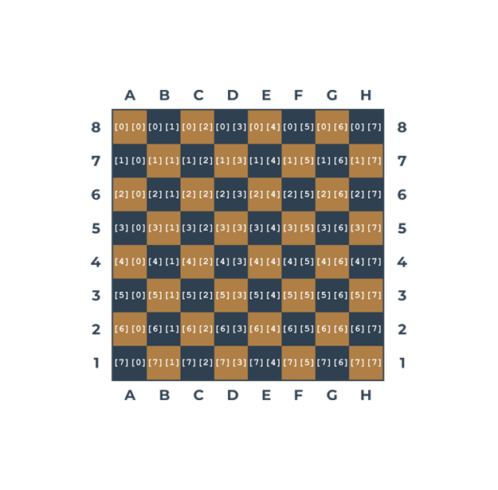
Glancing at the figure shown above, let’s set some chess pieces on the board. First, let’s add all the rooks:
board[0][0] = ROOK
board[0][7] = ROOK
board[7][0] = ROOK
board[7][7] = ROOKIf you want to add a knight to C4, you do it as follows:
board[4][2] = KNIGHTAnd now a pawn to E5:
board[3][4] = PAWN4.3 Multidimensional nature of lists: advanced applications
Let’s go deeper into the multidimensional nature of lists. To find any element of a two-dimensional list, you have to use two coordinates:
a vertical one (row number)
and a horizontal one (column number).
Imagine that you’re developing a piece of software for an automatic weather station. The device records the air temperature on an hourly basis and does it throughout the month. This gives you a total of \(24 \times 31 = 744\) values. Let’s try to design a list capable of storing all these results.
First, you have to decide which data type would be adequate for this application. In this case, a float would be best, since this thermometer is able to measure the temperature with an accuracy of 0.1 °C.
Then you take an arbitrary decision that the rows will record the readings every hour on the hour (so the row will have 24 elements) and each of the rows will be assigned to one day of the month (let’s assume that each month has 31 days, so you need 31 rows). Here’s the appropriate pair of comprehensions (h is for hour, d for day):
temps = [[0.0 for h in range(24)] for d in range(31)]The whole matrix is filled with zeros now. You can assume that it’s updated automatically using special hardware agents. The thing you have to do is to wait for the matrix to be filled with measurements.
Now it’s time to determine the monthly average noon temperature. Add up all 31 readings recorded at noon and divide the sum by 31. You can assume that the midnight temperature is stored first. Here’s the relevant code:
temps = [[0.0 for h in range(24)] for d in range(31)]
#
# The matrix is magically updated here.
#
total = 0.0
for day in temps:
total += day[11]
average = total / 31
print("Average temperature at noon:", average)Note: the day variable used by the for loop is not a scalar ‒ each pass through the temps matrix assigns it with the subsequent rows of the matrix; hence, it’s a list. It has to be indexed with 11 to access the temperature value measured at noon.
Now find the highest temperature during the whole month ‒ see the code:
temps = [[0.0 for h in range(24)] for d in range(31)]
#
# The matrix is magically updated here.
#
highest = -100.0
for day in temps:
for temp in day:
if temp > highest:
highest = temp
print("The highest temperature was:", highest)Note:
the
dayvariable iterates through all the rows in thetempsmatrix;the
tempvariable iterates through all the measurements taken in one day.
Now count the days when the temperature at noon was at least 20 °C:
temps = [[0.0 for h in range(24)] for d in range(31)]
#
# The matrix is magically updated here.
#
hot_days = 0
for day in temps:
if day[11] > 20.0:
hot_days += 1
print(hot_days, "days were hot.")Python does not limit the depth of list-in-list inclusion. Here you can see an example of a three-dimensional array:
rooms = [[[False for r in range(20)] for f in range(15)] for t in range(3)]Imagine a hotel. It’s a huge hotel consisting of three buildings, 15 floors each. There are 20 rooms on each floor. For this, you need an array which can collect and process information on the occupied/free rooms.
First step ‒ the type of the array’s elements. In this case, a Boolean value (True/False) would fit.
Step two ‒ calm analysis of the situation. Summarize the available information: three buildings, 15 floors, 20 rooms.
Now you can create the array rooms.
The first index (0 through 2) selects one of the buildings; the second (0 through 14) selects the floor, the third (0 through 19) selects the room number. All rooms are initially free.
Now you can book a room for two newlyweds: in the second building, on the tenth floor, room 14:
rooms[1][9][13] = Trueand release the second room on the fifth floor located in the first building:
rooms[0][4][1] = FalseCheck if there are any vacancies on the 15th floor of the third building:
vacancy = 0
for room_number in range(20):
if not rooms[2][14][room_number]:
vacancy += 1The vacancy variable contains 0 if all the rooms are occupied, or the number of available rooms otherwise.
4.4 Section summary
1. List comprehension allows you to create new lists from existing ones in a concise and elegant way. The syntax of a list comprehension looks as follows:
[expression for element in list if conditional] which is actually an equivalent of the following code:
for element in list:
if conditional:
expression Here’s an example of a list comprehension ‒ the code creates a five-element list filled with the first five natural numbers raised to the power of 3:
cubed = [num ** 3 for num in range(5)]
print(cubed)[0, 1, 8, 27, 64]2. You can use nested lists in Python to create matrices (i.e., two-dimensional lists). For example:
# A four-column/four-row table ‒ a two dimensional array (4x4)
table = [[":(", ":)", ":(", ":)"],
[":)", ":(", ":)", ":)"],
[":(", ":)", ":)", ":("],
[":)", ":)", ":)", ":("]]
print(table)
print(table[0][0])
print(table[0][3])[[':(', ':)', ':(', ':)'], [':)', ':(', ':)', ':)'], [':(', ':)', ':)', ':('], [':)', ':)', ':)', ':(']]
:(
:)3. You can nest as many lists in lists as you want, thereby creating \(n\)-dimensional lists, e.g., three-, four- or even sixty-four-dimensional arrays. For example:
# Cube - a three-dimensional array (3x3x3)
cube = [[[':(', 'x', 'x'],
[':)', 'x', 'x'],
[':(', 'x', 'x']],
[[':)', 'x', 'x'],
[':(', 'x', 'x'],
[':)', 'x', 'x']],
[[':(', 'x', 'x'],
[':)', 'x', 'x'],
[':)', 'x', 'x']]]
print(cube)
print(cube[0][0][0])
print(cube[2][2][0])[[[':(', 'x', 'x'], [':)', 'x', 'x'], [':(', 'x', 'x']], [[':)', 'x', 'x'], [':(', 'x', 'x'], [':)', 'x', 'x']], [[':(', 'x', 'x'], [':)', 'x', 'x'], [':)', 'x', 'x']]]
:(
:)5 Module 3 Completion - Module Test
Question 1: An operator able to check whether two values are equal is coded as: ==.
Question 2: Value eventually assigned to x is equal to:
x = 1
x = x == x
xTrueQuestion 3: How may stars (*) will the following snippet send to the console?
i = 0
while i <= 3 :
i += 2
print("*")*
*Question 4: How many stars (*) will the following snippet send to the console?
i = 0
while i <= 5 :
i += 1
if i % 2 == 0:
break
print("*")*Question 5: How many hashes (#) will the following snippet send to the console?
for i in range(1):
print("#") # this one is printed first
else:
print("#") # then this one and the loop ends#
#Question 6: How many hashes (#) will the following snippet send to the console?
var = 0
while var < 6:
var += 1
if var % 2 == 0:
continue
print("#")#
#
#Question 7: How many hashes (#) will the following snippet send to the console?
var = 1
while var < 10:
print("#")
var = var << 1 # = var * 2#
#
#
#Question 8: What value will be assigned to the x variable?
z = 10
y = 0
x = y < z and z > y or y > z and z < y # = True or False = True
xTrueQuestion 9: What is the output of the following snippet?
a = 1 # ...001
b = 0 # ...000
c = a & b # = 0
d = a | b # = 1
e = a ^ b # = 1
print(c, d, e)
print(c + d + e)0 1 1
2Question 10: What is the output of the following snippet?
my_list = [3, 1, -2]
print(my_list[my_list[-1]])
# my_list[-1] = -2. Then my_list[-2] = 11Question 11: What is the output of the following snippet?
my_list = [1, 2, 3, 4]
print(my_list[-3:-2])[2]Question 12: What does the second assignment do? Answer: It reverses the list.
vals = [0, 1, 2]
vals[0], vals[2] = vals[2], vals[0]
vals[2, 1, 0]Question 13: After execution of the following snippet, the sum of all vals elements will be equal to:
vals = [0, 1, 2]
vals.insert(0, 1) # insert 1 in position 0
del vals[1] # after previous insertion, the value 0 is in index 1
print("vals =", vals) # hence this is the final list
sum(vals)vals = [1, 1, 2]
4Question 14: Take a look at the snippet, and choose the true statements (select two answers). Answers: num and vals are of the same length. nums and vals refer to the same list.
nums = [1, 2, 3]
vals = nums
del vals[1:2]
print("vals: ", vals, ", nums: ", nums, sep="")vals: [1, 3], nums: [1, 3]Question 15: Which of the following sentences are true? (Select two answers). Answers: nums is longer than vals. nums and vals are two different lists.
nums = [1, 2, 3]
vals = nums[-1:-2]
print("vals: ", vals, ", nums: ", nums, sep="")vals: [], nums: [1, 2, 3]Question 16: What is the output of the following snippet?
my_list_1 = [1, 2, 3]
my_list_2 = []
for v in my_list_1:
my_list_2.insert(0, v)
print(my_list_2)[3, 2, 1]Question 17: What is the output of the following snippet?
my_list = [1, 2, 3]
for v in range(len(my_list)): # range object stays the same even after modifying my_list
# This is why the code is only executed three times
print("iteration number", v)
# Insert v-th element of my_list in index 1
# Since my_list is being modified, this element will alway be value 1
my_list.insert(1, my_list[v])
print("current list:", my_list, "\n")
print(my_list)iteration number 0
current list: [1, 1, 2, 3]
iteration number 1
current list: [1, 1, 1, 2, 3]
iteration number 2
current list: [1, 1, 1, 1, 2, 3]
[1, 1, 1, 1, 2, 3]Question 18: How many elements does my_list contain?
my_list = [i for i in range(-1, 2)]
my_list[-1, 0, 1]Question 19: What is the output of the following snippet?
# [3-i for i in range (3)] = [3, 2, 1]
# Then this list is repeated three times
t = [[3-i for i in range (3)] for j in range (3)]
s = 0
for i in range(3):
# Sum elements on the diagonal of the matrix
# These are 3, 2, 1
s += t[i][i]
print(s)6Question 20: What is the output of the following snippet?
my_list = [[0, 1, 2, 3] for i in range(2)]
print(my_list[2][0])
# The highest row index is 1. That is, there are only two lists.IndexError: list index out of range